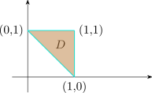
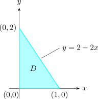

3.6 Applications Of Double Integrals
Double integrals compute volumes and areas, as already seen, and also masses, charges, moments, centres of mass, moments of inertia, probabilities and expected values: any quantity that is a density integrated over a region.
Mass and Charge
Suppose that a lamina (a thin flat plate) occupies a region \(D\) of the \(xy\)-plane and has density \(\rho (x,y)\), in units of mass per unit area. A small rectangle of area \(\Delta A\) about \((x^*_{ij},y^*_{ij})\) has mass about \(\rho (x^*_{ij},y^*_{ij})\,\Delta A\), so the total mass of the lamina is \[m = \lim _{k,l\to \infty } \sum ^k_{i=1}\sum ^l_{j=1} \rho (x_{ij}^*,y^*_{ij})\, \Delta A = \iint \limits _D \rho (x,y)\,dA .\] In the same way, if an electric charge is distributed over \(D\) with charge density \(\sigma (x,y)\), the total charge is \[Q = \iint \limits _D \sigma (x,y)\,dA .\]
Example 3.6.1. Charge is distributed over the triangular region \(D\) with vertices \((1,0)\), \((1,1)\) and \((0,1)\) so that the charge density at \((x,y)\) is \(\sigma (x,y) = xy\) coulombs per square metre. Find the total charge.

Solution. The region is bounded by \(y = 1 - x\) below, \(y = 1\) above, and \(x = 1\) on the right, so \[Q = \int ^1_0\int ^1_{1-x} xy\,dy\,dx = \int _0^1 \frac {x}{2}\left (1 - (1-x)^2\right )dx = \int _0^1\left (x^2 - \frac {x^3}{2}\right )dx = \frac 13 - \frac 18 = \frac {5}{24}\ \text {C}.\]
Moments and Centre of Mass
For point masses \(m_1,\dots , m_n\) at \((x_1,y_1),\dots , (x_n,y_n)\), the moments about the \(y\)- and \(x\)-axes are \[M_y = \sum _{i=1}^n m_ix_i ,\qquad M_x = \sum _{i=1}^n m_iy_i ,\] and the centre of mass is \((\bar x,\bar y)\) with \[\bar x = \frac {M_y}{m} , \qquad \bar y = \frac {M_x}{m} ,\qquad m = \sum ^n_{i=1} m_i .\] For a lamina with density \(\rho (x,y)\), the sums become integrals: \[M_x = \iint \limits _D y \, \rho (x,y)\,dA ,\qquad M_y = \iint \limits _D x \, \rho (x,y)\,dA ,\qquad \bar x = \frac {M_y}{m},\qquad \bar y = \frac {M_x}{m} .\] The centre of mass is the point at which the lamina would balance. For constant density it depends only on the shape of \(D\), and is called the centroid.
Example 3.6.2. Find the mass and centre of mass of a triangular lamina with vertices \((0,0)\), \((1,0)\) and \((0,2)\) if the density is \(\rho (x,y) = 1 + 3x + y\).
Solution.

The hypotenuse is \(y = 2 - 2x\), so \[m = \int ^1_0 \int ^{2-2x}_0(1 + 3x + y)\, dy \, dx = \int _0^1 \left (4 - 4x^2\right )dx = \frac {8}{3} .\] Then \begin {align*} \bar x & = \frac {3}{8}\int ^1_0 \int ^{2 - 2x}_0 x(1 + 3x + y)\,dy\,dx = \frac 38\int _0^1\left (4x - 4x^3\right )dx = \frac 38\cdot 1 = \frac {3}{8},\\ \bar y & = \frac {3}{8}\int ^1_0 \int ^{2 - 2x}_0 y(1 + 3x + y)\,dy\,dx = \frac 38\cdot \frac {11}{6} = \frac {11}{16} . \end {align*}
The centre of mass is \(\left (\frac 38,\frac {11}{16}\right )\). The centroid of the triangle is \(\left (\frac 13,\frac 23\right )\); the density, larger towards the right, moves the balance point to the right.
Solution. By symmetry \(\bar x = 0\). With \(\rho = 1\), the mass is the area \(\frac {\pi a^2}{2}\), and in polar coordinates \[M_x = \int _0^\pi \int _0^a r\sin \theta \cdot r\,dr\,d\theta = \frac {a^3}{3}\int _0^\pi \sin \theta \,d\theta = \frac {2a^3}{3},\qquad \bar y = \frac {2a^3/3}{\pi a^2/2} = \frac {4a}{3\pi }\approx 0.424\,a .\]
Moments of Inertia
The moment of inertia of a particle of mass \(m\) about an axis is \(mr^2\), where \(r\) is its distance from the axis; it measures resistance to rotation, as mass measures resistance to linear motion. For a lamina, \[I_x = \iint \limits _D y^2\rho (x,y)\,dA,\qquad I_y = \iint \limits _D x^2\rho (x,y)\,dA,\qquad I_0 = \iint \limits _D (x^2 + y^2)\rho (x,y)\,dA,\] about the \(x\)-axis, the \(y\)-axis and the origin, with \(I_0 = I_x + I_y\).
Example 3.6.4. Find the moment of inertia about its centre of a uniform disc of density \(\rho \) and radius \(a\), and express it in terms of the mass \(m\).
Solution. \[I_0 = \int _0^{2\pi }\int _0^a r^2\rho \,r\,dr\,d\theta = 2\pi \rho \frac {a^4}{4} = \frac {\pi \rho a^4}{2} .\] Since \(m = \rho \pi a^2\), \(I_0 = \frac 12 ma^2\): a disc is easier to spin than a ring of the same mass and radius, for which \(I_0 = ma^2\), because its mass is closer to the centre.
Probability
A joint density function of two random variables \(X\) and \(Y\) is a function \(f\geq 0\) with \(\iint _{\mathbb {R}^2}f\,dA = 1\), and the probability that \((X,Y)\) lies in a region \(D\) is \(\iint _D f(x,y)\,dA\).
Example 3.6.5. The joint density of \(X\) and \(Y\) is \(f(x,y) = C(x + 2y)\) for \(0\leq x\leq 10\), \(0\leq y\leq 10\), and \(0\) elsewhere. Find \(C\) and \(P(X\leq 7,\ Y\geq 2)\).
Solution. The total probability is \(C\int _0^{10}\int _0^{10}(x + 2y)\,dy\,dx = C\int _0^{10}(10x + 100)\,dx = 1500C\), so \(C = \frac {1}{1500}\). Then \begin {align*} P(X\leq 7,\ Y\geq 2) & = \frac {1}{1500}\int _0^7\int _2^{10}(x + 2y)\,dy\,dx = \frac {1}{1500}\int _0^7 (8x + 96)\,dx\\ & = \frac {196 + 672}{1500} = \frac {868}{1500}\approx 0.579 . \end {align*}
Questions on this section
Stuck on something here? Ask below and it stays attached to this topic.